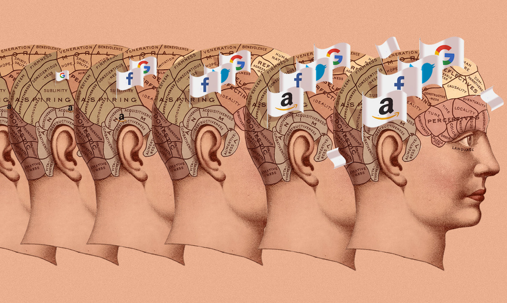

Here’s the real danger that Facebook, Google and the other tech monopolies pose to our society
7 July 2018 / Jamie Bartlett Most people fear and loathe monopolies because they dominate their categories or markets and squeeze out competition. But that’s just the tip of the iceberg of the threat they hold, warns technology analyst Jamie Bartlett.
Tech is just the latest vehicle for very rich people to use well-tested techniques of buying political influence, monopolistic behavior and avoiding regulation.The threat that tech monopolies pose to democracies is about more than the prices they charge: it’s the concentration of power, data and control over the public space — and their ability to wield this power over a growing number of economic activities, especially in the infrastructure and technologies of the future. The following companies operate as either monopolies or oligopolies in their respective fields: Google, Facebook, Uber, Airbnb, Amazon, Twitter, Instagram, Spotify. Integrated into everything, everywhere, their technology will blanket the world.
Perhaps the final stage in the rise of monopolies is when their economic power morphs into what Marxists sometimes call “cultural hegemony.” That is, where domination can be achieved through controlling the ideas and assumptions available to the public. The idea, associated with philosopher and politician Antonio Gramsci and his criticism of capitalism, is worth considering because there’s little doubt that a techno-utopian view of the world has infected society.
All technology encodes within it certain values and assumptions about how the world works. Gutenberg’s press was more than a mere printing machine — it popularized the ideal of free information exchange. The telegraph system transformed people’s perceptions of time and distance, while the radio helped invent the concept of a single shared nationality, culture and language. The medium, remember, is the message. And the medium of digital technology, as a sector, is now monopolizing the whole economy.
Total victory for the monopoly is not over economics or politics. It’s over assumptions, ideas and possible futures. Because when that happens, Big Tech won’t need to lobby or buy out competitors. They will have so insinuated themselves in our lives and minds, that we won’t be able to imagine a world without them.
Jamie Bartlett